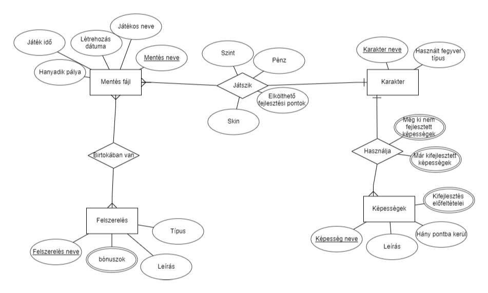
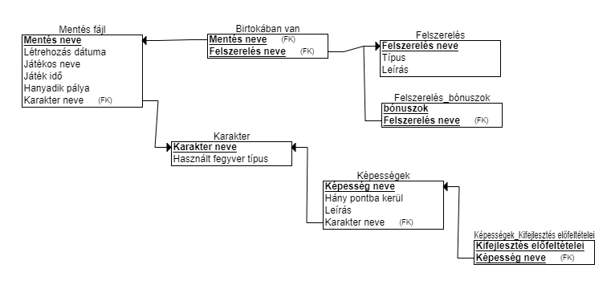

Csoport neve: Team Cherry
Feladat sorszáma: SORSZÁM
Feladat címe: 2D RPG
Rendszertervezés
Gyakorlatvezető::
Árvai László
Csoport tagok:
|
Orosz Péter (Csapatvezető) |
WO02D7 |
oroszpeter97@gmail.com |
|
Dobai Attila |
DIZ4VX |
readywer136@gmail.com |
|
Drahos Alinka |
EG55OI |
drahosalinka@freemail.hu |
|
Tőzsér Zétény |
QGNLD2 |
tozserzeteny@gmail.com |
|
Gáncsos Dániel |
VS8KWD |
channeltaury@gmail.com |
2022.09.22
Történet
|
Dátum |
Verzió |
Leírás |
Szerző |
|
2022. 11 22 |
1.0 |
Kezdeti verzió |
Orosz Péter |
|
|
|
|
|
|
|
|
|
|
Tartalomjegyzék
3.1. Adatbázis kezelő kiválasztása
3.4. Az adatbázis kezelővel kapcsolatot tartó osztályok
4. A funkcionális modell kiegészítése


A mentés fájlról a játékos többminden el van tárolva, nem csak a program, hanem a játékos kényelme számára is. A mentések név alapján lesznek rendezve. A karakterről az éppen használatban lévő fegyvere, képességei tárolva vannak. Az ER modellben kapcsolatból származtatott tulajdonságok nem jellennek meg itt. A "birtokában van" kapcsolatból kapcsolótábla lett, A többértékű tulajdonságokból külön táblák lettek.
| Teszt Szám | Teszt Eset | Előfeltétel | Minek Kell Történnie | Mi Történt (Tesztelő Tölti Ki) |
|---|---|---|---|---|
| 1. | Dupla kattintás a játék ikonjára. | - | Elindul a játék. | |
| 2. | 'esc' gomb megnyomása. | Fut a játék. | Megnyílik a menü. | |
| 3. | 'settings' opció kiválasztása. | - | Megnyílnak a beállítások. | |
| 4. | Beállításokon belül átállítunk valamit | - | A játék a beállításoknak megfelelően át áll. | |
| 5. | Rámegyünk a 'play' gombra | - | Feljönnek a 'new game', a 'continue' és a 'saved games' opciók. |